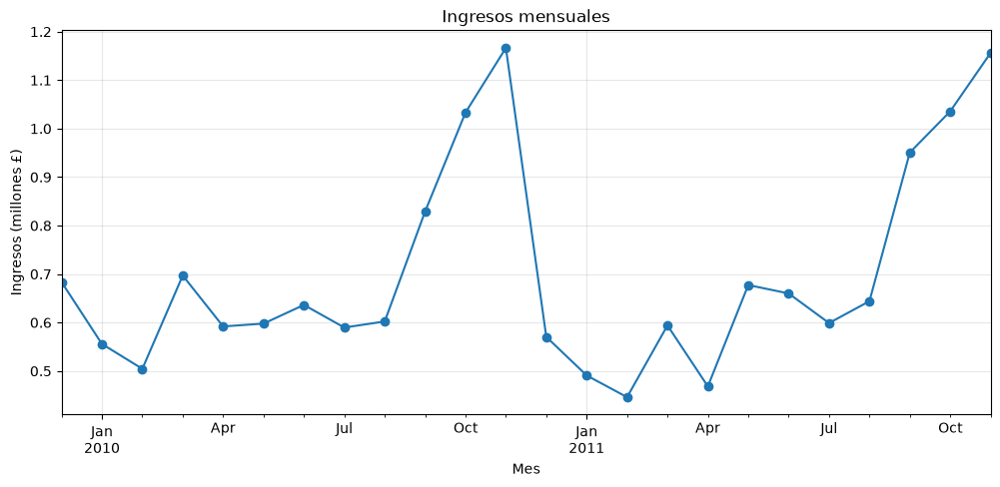
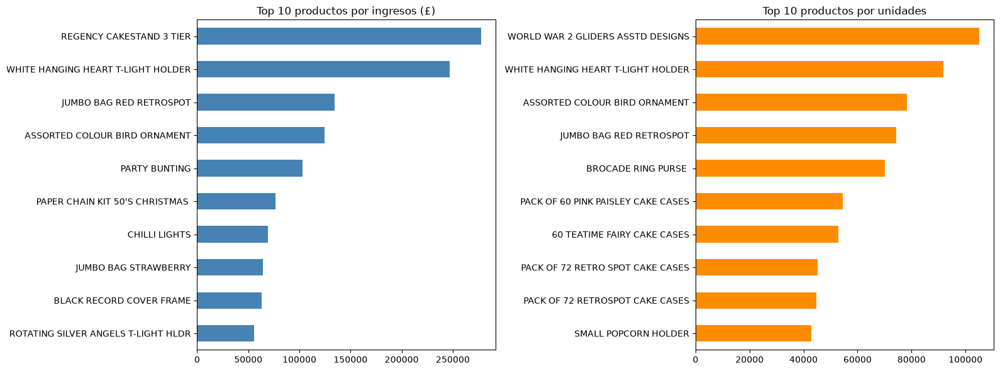
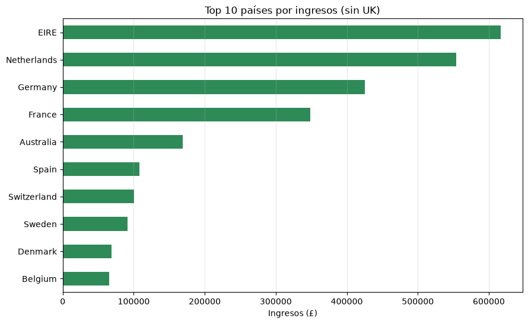
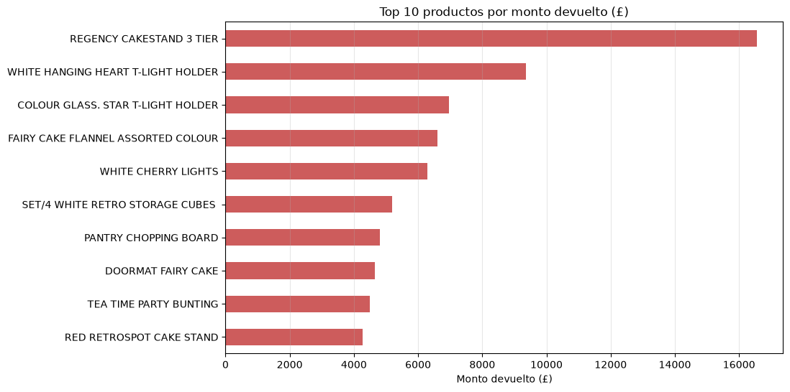
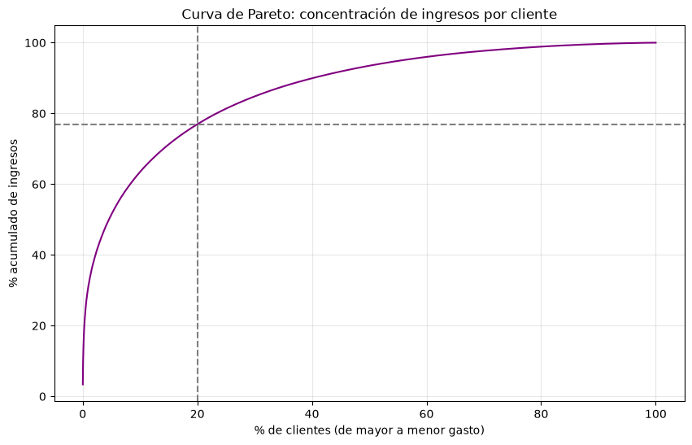
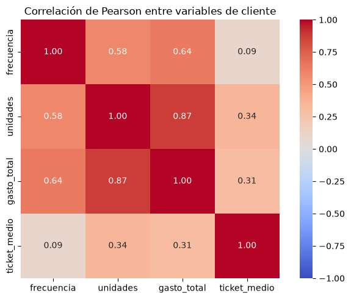
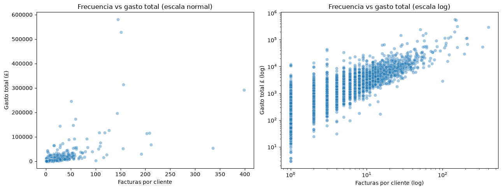
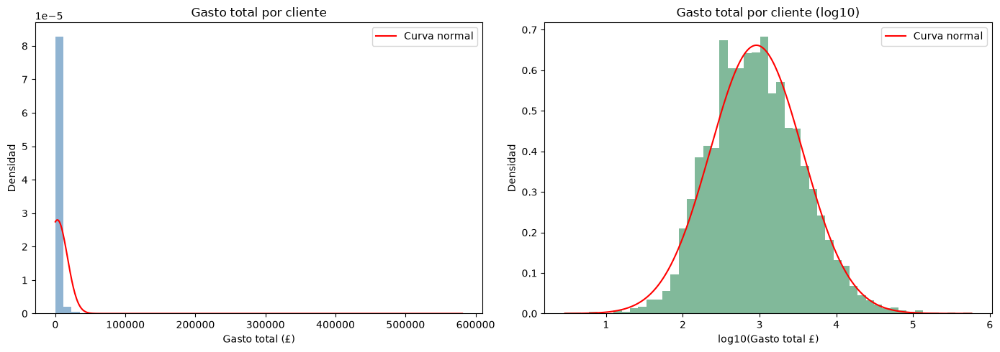

FRANCO_R
/00 — INFORME EJECUTIVO
Quién compra,
cuándo
y cuánto
Dos años de ventas de una tienda online británica
Análisis exploratorio del dataset Online Retail II. Limpieza, KPIs, estacionalidad, productos, mercado, devoluciones, clientes y estadística.
AutorFranco Recabarren
ProgramaData Analytics · Factoría F5
PeriodoDic 2009 — Dic 2011
● ONLINE RETAIL IIFUENTE: UCI MACHINE LEARNING REPOSITORY
/01 — INTRODUCCIÓN
Datos limpios
De 1.067.371 filas a una base fiable
Este informe resume el análisis de las ventas de una tienda online del Reino Unido que vende regalos y artículos de decoración. El objetivo es responder preguntas de negocio concretas: cuánto se vende, cuándo, qué productos, en qué países, cuánto se devuelve y qué clientes sostienen los ingresos. Todas las cifras salen del notebook 01_eda_online_retail.ipynb.
El dataset original tiene 1.067.371 filas; cada fila es un producto dentro de una factura. Antes de analizar se limpiaron los datos:
- Se quitaron las filas sin cliente (243.007 nulos en
Customer ID), porque no permiten estudiar el comportamiento de compra.
- Se eliminaron 26.479 filas duplicadas y 70 filas con precio 0 (ajustes manuales y regalos).
- Se separaron las ventas de las devoluciones (facturas que empiezan con "C").
- Se eliminaron dos pares de compra y devolución atípicos (80.995 y 74.215 unidades) anulados a los pocos minutos: errores de carga.
RESULTADO: 779.423 LÍNEAS DE VENTA LIMPIAS, BASE DE TODO EL ANÁLISIS.
/02 — KPIS
El negocio en números
£17.129.151Ingresos
36.967Facturas
5.878Clientes
4.630Productos
Cada cliente compró en promedio 6,3 veces en dos años. El ticket típico (mediana) por factura es de £303,04, mientras que la media sube a £463,36 por unas pocas facturas muy grandes.
Compras recurrentes y tickets de cientos de libras dibujan un perfil claro: la mayoría de los clientes son mayoristas que compran para revender, no consumidores finales.
/01 — /02FRANCO_R · EDA ONLINE RETAIL II
/03 — ESTACIONALIDAD
Noviembre manda
El stock navideño se compra antes

Ingresos mensuales · diciembre 2011 excluido por estar incompleto
El patrón se repite los dos años: los ingresos suben desde septiembre y tocan su máximo en noviembre (£1.166.460 en 2010 y £1.156.206 en 2011). Los meses más flojos son los de principio de año, con febrero 2011 como el más bajo (£446.085).
Que el pico sea en noviembre y no en diciembre confirma el perfil mayorista: los clientes compran stock antes de Navidad para revenderlo.
/03FRANCO_R · EDA ONLINE RETAIL II
/04 — PRODUCTOS
El núcleo del catálogo
Volumen no siempre es ingreso

Top 10 productos por ingresos (izq.) y por unidades (der.)
REGENCY CAKESTAND 3 TIER lidera en ingresos (£277.656), seguido de WHITE HANGING HEART T-LIGHT HOLDER (£247.048). En unidades gana WORLD WAR 2 GLIDERS ASSTD DESIGNS (105.185 unidades), pero no entra en el top de ingresos porque su precio es bajo.
Tres productos aparecen en ambos rankings: WHITE HANGING HEART T-LIGHT HOLDER, JUMBO BAG RED RETROSPOT y ASSORTED COLOUR BIRD ORNAMENT. Combinan volumen y precio: son el núcleo del catálogo.
/04FRANCO_R · EDA ONLINE RETAIL II
/05 — MERCADO
Un negocio local
41 países, un mercado dominante

Top 10 países por ingresos, sin el Reino Unido
La tienda vende a 41 países, pero el Reino Unido concentra el 82,6% de los ingresos (£14.143.582). Fuera de casa lideran Irlanda (3,6%), Países Bajos (3,2%) y Alemania (2,5%); 9 de los 10 primeros países son europeos.
Depender tanto de un solo mercado es un riesgo, y Europa es el área natural para crecer.
/05FRANCO_R · EDA ONLINE RETAIL II
/06 — DEVOLUCIONES
Se devuelve lo que se vende
Bajas y sin un producto problemático

Top 10 productos por monto devuelto
Se devolvieron £839.160, el 4,9% de los ingresos, en 7.899 facturas. Las devoluciones son solo el 2,30% de las filas, pero en dinero pesan más: se devuelven líneas de más valor que la venta promedio.
La práctica es habitual: el 43,8% de los clientes devolvió al menos una vez. Los dos productos más devueltos son también los dos con más ingresos: se devuelven más porque se venden más.
/06FRANCO_R · EDA ONLINE RETAIL II
/07 — CLIENTES
Pocos sostienen a todos
La regla 80/20 se cumple
76,9%de los ingresos lo genera el 20% de los clientes (1.175)

Curva de Pareto · % acumulado de ingresos según % de clientes
Se cumple casi exacta la regla 80/20: pocos clientes sostienen el negocio, y perder a uno de ellos impacta fuerte en la facturación.
/07FRANCO_R · EDA ONLINE RETAIL II
/08 — CORRELACIONES
Qué hace valioso a un cliente
Volumen y recurrencia

Pearson entre frecuencia, unidades, gasto total y ticket medio por cliente
- El gasto total depende sobre todo del volumen: unidades y gasto tienen r = 0,87.
- Los clientes que compran más seguido gastan más en total (r = 0,64).
- Comprar seguido no significa gastar más por compra: frecuencia y ticket medio casi no se relacionan (r = 0,09).

Frecuencia vs gasto total por cliente · escala normal y logarítmica
Hay dos formas de ser un cliente grande: el cliente 14911 compró 398 veces con ticket medio de £732; el 17450 solo 51 veces, con ticket medio de £4.800.
/08FRANCO_R · EDA ONLINE RETAIL II
/09 — PRUEBA DE HIPÓTESIS
No es azar
Spearman: frecuencia vs gasto
Para descartar que la relación sea casualidad se hizo una prueba con la correlación de Spearman, más adecuada que Pearson para datos con valores extremos.
- H₀: no hay relación entre frecuencia y gasto. α = 0,05.
- Resultado: rho = 0,86 con p < 0,001 sobre 5.878 clientes. Se rechaza H₀.
LA RELACIÓN ES FUERTE Y NO ES FRUTO DEL AZAR. LA FRECUENCIA DE COMPRA ES UN BUEN INDICADOR DEL VALOR DE UN CLIENTE. CORRELACIÓN NO IMPLICA CAUSALIDAD.
/10 — DISTRIBUCIÓN
Lejos de la campana
El gasto es log-normal

Gasto por cliente vs campana de Gauss · escala normal y logarítmica
El gasto por cliente no sigue una campana de Gauss: asimetría de 25,83 y media (£2.914,11) 3,4 veces la mediana (£865,40). En escala logarítmica sí se ajusta (asimetría 0,23): una distribución log-normal, habitual en datos de dinero. Por eso se usaron mediana y Spearman.
/09 — /10FRANCO_R · EDA ONLINE RETAIL II
/11 — CONCLUSIONES
Lo que dicen los datos
Perfil, mercado y clientes
[1] Perfil del negocio
- Tienda de perfil mayorista: £17.129.151 de ingresos, 6,3 compras por cliente y ticket típico de £303.
- Fuerte estacionalidad, con pico en noviembre por la compra de stock navideño.
[2] Productos y mercado
- Pocos productos de decoración concentran ingresos y volumen.
- El Reino Unido aporta el 82,6% de los ingresos; el resto viene sobre todo de Europa.
- Las devoluciones son el 4,9% de los ingresos y siguen a los productos con más ingresos.
[3] Clientes
- El 20% de los clientes genera el 76,9% de los ingresos.
- La frecuencia de compra se relaciona fuerte con el gasto (rho = 0,86, p < 0,001).
- El gasto es muy desigual: muchos clientes chicos y pocos muy grandes.
/12 — RECOMENDACIONES
Próximos pasos
- Retener a los clientes grandes con atención personalizada o descuentos por volumen.
- Fomentar la recompra en los clientes chicos: la frecuencia es la vía más clara hacia mayor gasto.
- Preparar stock y campañas desde septiembre para acompañar el pico de noviembre.
- Crecer en Europa, empezando por Irlanda, Países Bajos y Alemania.
● FIN DEL INFORMEFRANCO_R · EDA ONLINE RETAIL II